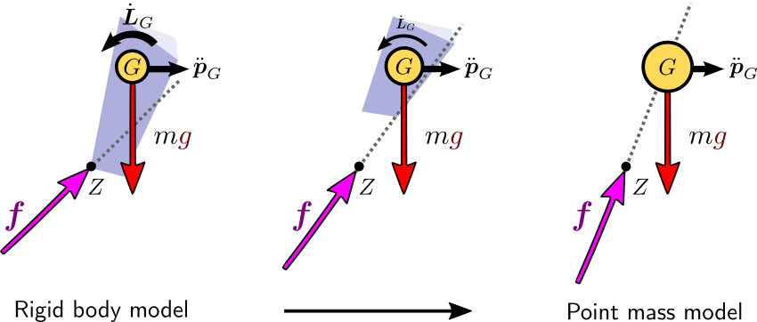

The point mass model is a recurring reduced model in physics in general, and in
locomotion modeling in particular. It is a common ancestor to the inverted
pendulum and linear inverted pendulum models. In this post, we will
review the assumptions that define it, and some of their not-so-intuitive
consequences.
Sufficient actuation
The point mass model can be used as a reduced model assuming first that the
robot has enough joint torque to provide for the actuated part of its
equations of motion (Assumption 1). This
way, we focus on the remaining Newton-Euler equations that correspond to the six unactuated
coordinates of the robot's floating base:
[mp¨GL˙G]=[fτG]+[mg0]where on the left-hand side pG is the position of the center
of mass (CoM) and LG is the net angular momentum around the CoM,
while on the right-hand side f is the resultant of contact forces,
τG is the moment of contact forces around the CoM, m is
the robot mass and g is the gravity vector.
Concentrated mass
The second key assumption is that all of the robot's mass is concentrated at
the CoM, yet contact forces can still act on the robot via massless limbs. A
non-straightforward consequence of this is hypothesis is that the reaction
force has to go through the center of mass, where the net angular momentum is
zero. At Assumption 1, Newton-Euler equations leave us with:
L˙G=τG=(pZ−pG)×fwhere Z is the ZMP, which
we can think of in what follows as the point where the resultant force is
applied (for more precision, see the ZMP definition as a non-central axis). If
our reduced model was a rigid body, its angular velocity would be such that
IGω˙=L˙G=(pZ−pG)×fwhere the (locked) inertia matrix IG is a positive definite matrix.
We see that the resultant force f does not have to go through the
CoM, and that its deviation from the ZMP-CoM axis yields angular accelerations
ω˙. For the sake of our thought experiment (this is not a
proper proof), let's assume we keep our angular acceleration constant and look
at what happens when we and concentrate all the robot's mass at its CoM. The
inertia matrix IG is obtained by summing up all body inertias:
IG=body i∑Ii+mi(pi−pG)×(pi−pG)×⊤where Ii is the standard inertia matrix at body i's center
of mass, as is e.g. described in the inertial element of the URDF format. It is calculated by summing similarly
over all volumes of the body with non-zero mass density, with formulas
available for
primitive volumes.
Now, what happens as we shift away all of the mass to the CoM? Body inertia
matrices Ii→0 as all bodies become massless and their
respective mass density functions become zero. Distances ∥pi−pG∥→0 for non-zero masses become zero as well, since all the mass is
moved to the CoM. We then end up, at the limit, with IG→0. Since for the sake of the example we are keeping
ω˙ at a fixed value, this means:
(pZ−pG)×f=IGω˙→0That is, f and (pZ−pG) become aligned, and the
resultant force goes through the center of mass. Here is a visual summary of
this property:

In the limit of this process, angular coordinates have vanished from our
equations of motion and we are left with:
mp¨G(pZ−pG)×f=f=0This property that the resultant force goes through the center of mass is
common to all point mass models, including the inverted pendulum and linear
inverted pendulum models.
To go further
The point mass model is frequently used in legged locomotion via the inverted
pendulum or linear inverted pendulum models. It is also used
directly, for instance for fall prediction of
limbed robots making multiple contacts with their environment.
Discussion
Feel free to post a comment by e-mail using the form below. Your e-mail address will not be disclosed.